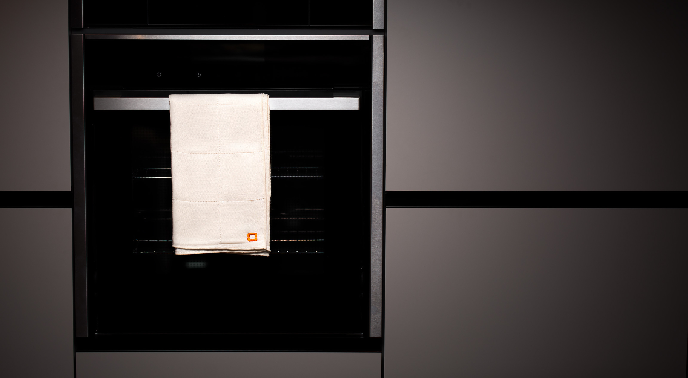

Полотенце для лица и рук BORK HT530
Инновационный текстиль, при производстве которого используются и новейшие технологии, и традиционные японские техники производства. Сочетание традиционности и инновации, рождает по истине уникальный продукт.
Отличительной особенностью данного текстиля является уникальное многослойные плетение, которое одновременно придаёт мягкость текстилю и в то же время, многократно увеличивает количество впитываемой воды. Также, за счёт многослойности, есть возможность сочетания нескольких видов пряжи, что позволяет придавать изделиям свойства, которые до этого невозможно было совместить в одном виде текстиля.
Фабрика Маруяма была основана в 1930 году, в самом сердце Японии, в префектуре Нара, недалеко от древней столицы Японии Киото. Впитав многовековую историю самой Японии и основываясь на традиционных техниках ткачества, фабрика производила москитные сетки для японских домов. В последствии, в связи с угасанием спроса, фабрика перешла на производство домашнего текстиля, используя традиционную технику и в то же время современные технологии и оборудование. На сегодняшний день, фабрика является одним из основных поставщиков традиционных японских отелей «рёкан» по всей Японии, символизируя традиционные ценности Японии.
Рёкан – гостиница в традиционном японском стиле

Полотенце для лица и рук BORK HT530 размером 36 x 85 см. соткано в 4 слоя из 100% органического хлопка, выращенного в США. Такая технология плетения делает текстиль непревзойденно мягким и отлично впитывающим влагу. А благодаря отсутствию в составе красителей полотенце подходит для людей с очень чувствительной кожей.